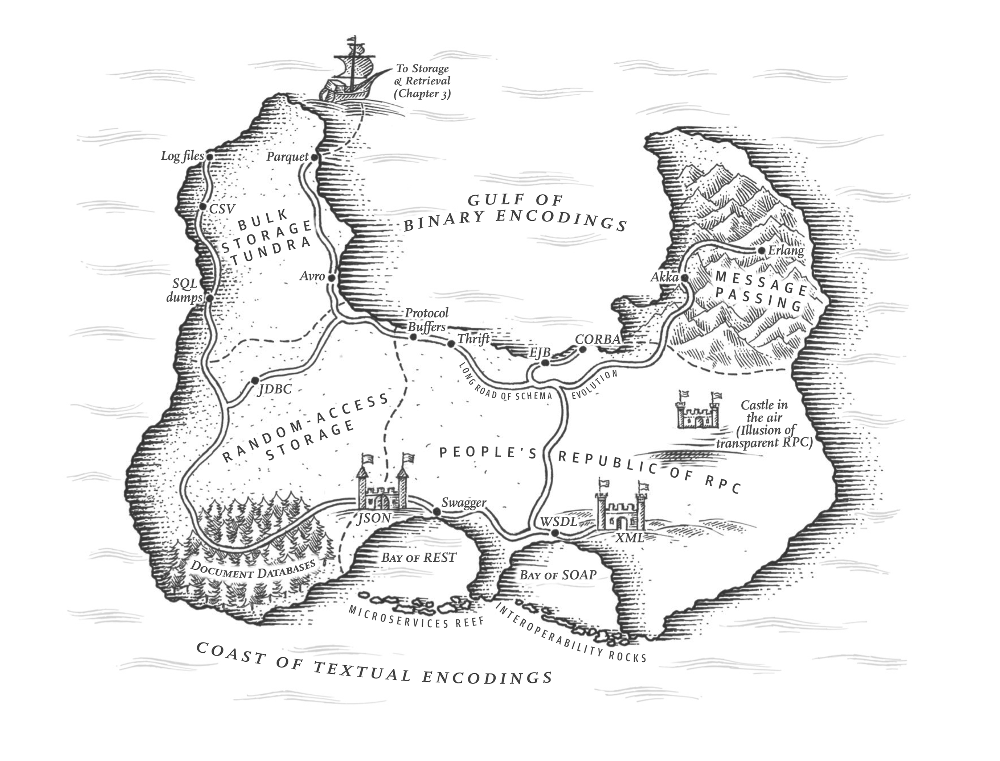

DDIA Chapter 4 - Encoding and Evolution

This chapter introduces the concepts of encoding, how data structures are represented as bytes on a disk or over the network, and evolution, how we can change the structure of data (i.e. the schema) while maintaining backward and forward compatibility.
Backward and Forward Compatibility
In a modern distributed application an upgrade involving a schema change typically cannot be deployed to all components of a system simultaneously. In addition you might not be able to take down your database to upgrade all the old data to a new schema. So you may have components on new code reading data in the old schema and potentially components on old code reading data that uses the new schema. In these cases, both backward and forward compatibility is desirable.
![]()
- Backward Compatibility: Newer code can read the data written by older code.
- Forward Compatibility: Older code can read the data written by newer code.
Different ways of encoding data may allow for either backward or forward compatibility or both (or neither).
Encoding
Language Specific Formats
- Examples java.io.serializable for Java or pickle for Python.
- Usually very convenient but mean you are locked in to a specific programming language for both reading and writing.
- Can introduce security risks as they need to allow instantiation of arbitrary object types.
- Usually do not provide a means for backward or forward compatibility.
- Can be slow
JSON, XML and Binary Variants
JSON, XML and CSV are textual formats that produce (somewhat) human-readable data. However they may have issues with encoding numbers (e.g. specifying integer versus float), the schema representation can be quite complicated and they typically result in a large-file size, especially when the data contains a large amount of numbers.
JSON and XML have binary variants that are somewhat more efficient in storing numbers - e.g. MessagePack and BSON but typically still store each field name for each record.
Thrift and Protocol Buffers
Apache Thrift was originally developed and Facebook, whereas Protocol Buffers originated at Google.
Thrift: The Missing Guide is a better into to Thrift than the official documentation
Both define an interface definition language (IDL) used to describe a data structure as well as compilers for different programming languages that take an IDL and generate code to read/write data in that format.
Avro
Apache Avro is a binary encoding format that grew out of the Hadoop ecosystem.
Parquet
Apache Parquet differs from Avro in that Parquet os column-oriented whereas Avro is row-oriented. This makes it an efficient way to store and retrieve large data sets and is especially useful for data analysis applications. Being column oriented it can use more efficient compression schemes for each column as the data type for contiguous records is homogenous.
Example: Storing a struct in different binary formats
Example record which we’ll encode in various binary formats
{
"userName": "Martin",
"favoriteNumber": 1337,
"interests": ["daydreaming", "hacking"]
}With whitespace removed, the textual JSON encoding takes 81 bytes.
MessagePack example

The MessagePack encoding is 66 bytes, only about 20% smaller than the textual representation. The field names are included for every record, bloating the size.
Thrift example
Thrift IDL:
struct Person {
1: required string userName,
2: optional i64 favoriteNumber,
3: optional list<string> interests
}The Thrift Compact Protocol encodes the struct in 34 bytes. It use a variable integer encoding, so 1337 is encoded as 2 bytes rather than 8 bytes. It also stores field tags instead of field names, as well as a code identifying the type of each field. (Protocol Buffers use a similar encoding)

Avro example
Avro IDL:
record Person {
string userName;
union { null, long } favoriteNumber = null;
array<string> interests;
}The Avro encoding for this struct is 32 bytes. Like Thrift integers are encoded with a variable-length encoding. Unlike Thrift and Protocol Buffers, there are no field tags identifying each field or type codes identifying the type of the field. Instead the code reading the data relies on the schema to interpret the bytes - so that the schema used to read the data must be the same as that used to write the data.
Schema Evolution
Field tags are critical to the encoding of data for both Thrift and Protocol Buffers. Field names can be changed without impact but field tags cannot be changed without invalidating any data already written. To maintain forward compatibility, a new scheme can add a field (using a new field tag) - old code will just skip the bytes following an unrecognized field tag. For backward compatibility, a new field can be added so long as it is optional - otherwise new code reading old data will not find the new required field. When removing a field, to maintain both forward and backward compatibility, the removed field must be optional (and you can’t use the same field tag again).
Avro handles schema evolution by storing the writer’s schema in the file. When code with a new schema reads the file, it can compare the new schema with the old schema in the file. To maintain compatibility, only fields with a default value can be added or removed.
Modes of Dataflow
Data can flow between processes in different ways. As these processes don’t share memory, the data must be encoded as a sequence of bytes to move from one process to the other.
Dataflow through Databases
The process writing to the database encodes the data and the process reading from the database decodes it.
Dataflow through Services: REST and RPC
The client encodes a request, the server decodes the request and encodes a response, and the client finally decodes the response.
Message-passing Dataflow
Asynchronous message passing (using message brokers or actors), where nodes communicate by sending each other messages that are encoded by the sender and decoded by the recipient.